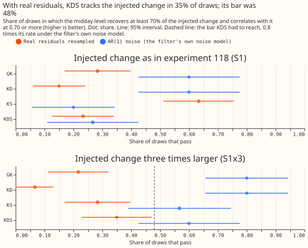
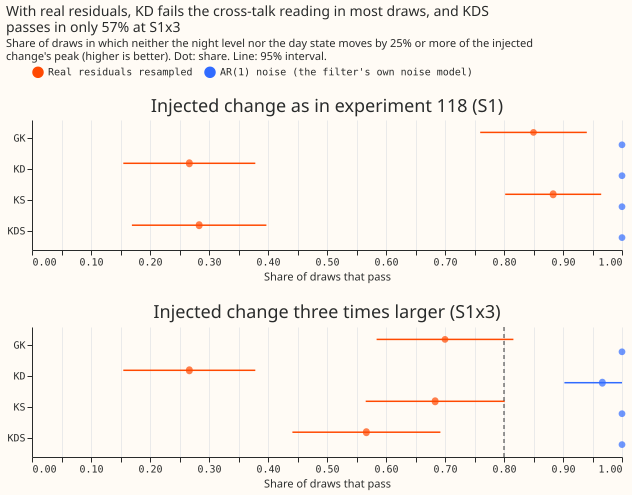
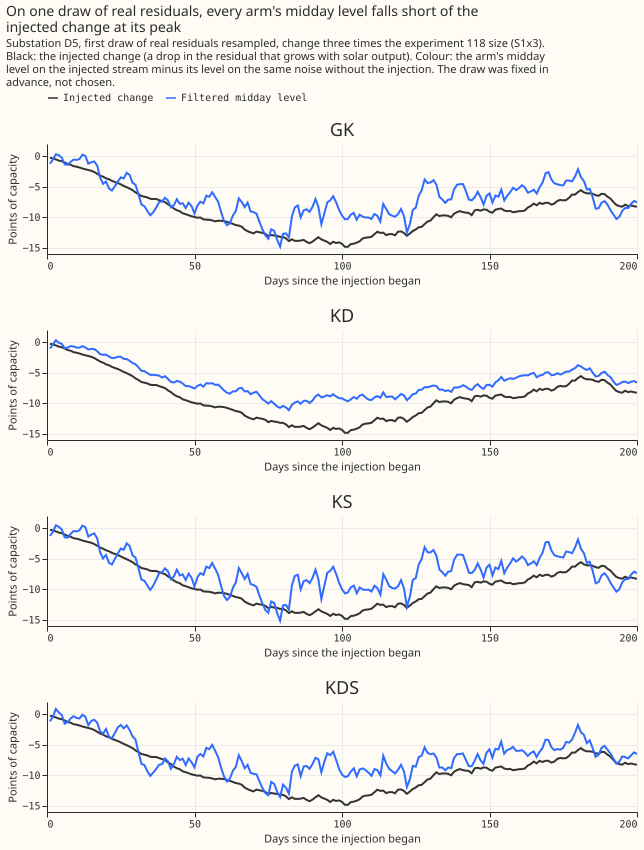
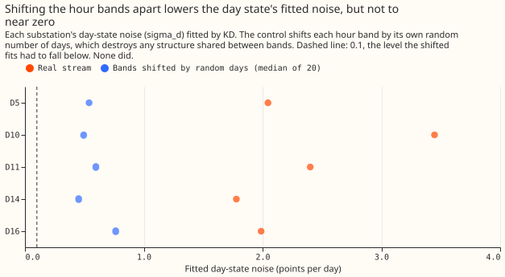
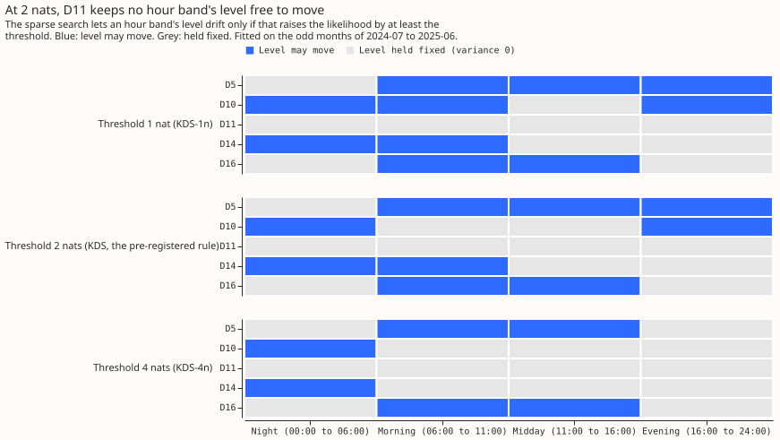

Differentiable physics, KFD: a shared day-level error state and a sparse process noise in GAM-K's filter
This experiment asked whether one extra number per day, shared by every time of day, lets the correction to a Primary substation's day-ahead demand forecast follow recent errors more closely. It stopped before any forecast was scored. The forecast comes from a convex model (a physical demand model fitted by least squares) driven by weather forecasts from the European Centre for Medium-Range Weather Forecasts (ECMWF). A Kalman filter (a method that updates an estimate of the current forecast error each time a new reading arrives) corrects each forecast. For each of four hour bands (night, morning, midday, and evening) the filter keeps a slowly moving level and a fast anomaly. Errors and scores are in points, where one point is 1% of a substation's effective capacity. The substations D5, D10, D11, D14, and D16 are anonymised Primary substations.
We added a day-level error that all four hour bands share, and changed how the filter decides which levels may drift. The new filter is called KDS. The filter it extends is GAM-K, experiment 111's level-and-anomaly filter, called GK in the tables. KD is GK plus the shared day state only, and KS is GK with the sparse level noise only. Before scoring any forecast, we injected a known change, shaped like a rise in solar-panel capacity, into copies of the real recorded errors of the five substations. Each copy is one draw. We then checked how often each filter's midday level recovered the injected change. S1 is the size of change that experiment 118 injected, and S1x3 is three times that size. The plan said to stop if KDS tracked worse than GK when the errors follow the filter's own AR(1) error model (each reading is the previous reading's error times a constant, plus fresh noise). KDS did, so the experiment stopped.
KDS did not recover the injected change reliably, and its day state failed a control that shifts
the hour bands apart. At S1x3, KDS's midday level recovered the change in 35% of the 60 draws of
real errors. The plan set the bar at 0.8 times KDS's own rate on AR(1) draws (60%), which is 48%.
GK recovered it in 22% of the real draws, and in 80% of the 30 AR(1) draws against KDS's 60%. The
verdict is inconclusive, because the plan's decision rule needs a scored contrast to say
supported or not supported, and none exists. The errors in different hour bands do move
together, but a single shared state probably also absorbs errors that belong to one band. At S1,
four of the five substations could not show the change clearly in the first place.
Figures

Reading 1 compares each arm's rate on real residuals (orange) with its rate on AR(1) draws (blue). At S1x3, KDS reaches 0.35 against a bar of 0.48.

Reading 2 asks whether the night level and the day state stay below a quarter of the injected change's peak. KD passes in 27% of real draws and KDS in 28% at S1 and 57% at S1x3.

On the first draw at D5 (S1x3), every arm's level stays about 6 points short of the injected change at its peak.

The shifted fits stay at 0.45 to 0.76 points against a required level below 0.1.

D11 keeps no free level at 1, 2, or 4 nats (a nat is the unit of a log-likelihood gain).
Arms that ran at the gate
| Arm | Filter state | Level noise | Role |
|---|---|---|---|
| GK | level and AR(1) anomaly per hour band | one shared variance (experiment 111's) | benchmark |
| KD | GK plus one day-level state d shared by all four bands | one shared variance, refitted | day state alone |
| KS | GK | one variance per band, sparse from zero | sparse noise alone |
| KDS | GK plus d | one variance per band, sparse from zero | hypothesis arm |
The hour bands are local time: 00:00 to 05:59, 06:00 to 10:59, 11:00 to 15:59, and 16:00 to 23:59. The state d is constant within a local day and follows an AR(1) across days, with its persistence bounded at 0.90 per day. The sparse search sets each band's level variance to exactly zero unless a likelihood gain of 2 nats justifies it. KD, KS, and KDS use the one-step likelihood, as GAM-K does, so that they differ from GK in the state and the noise search only. Four exploratory variants (KDS-1n, KDS-4n, KDS-floor, and KDS-da) were fitted and not run through the gate or scored.
The filter and the search for its noise re-implement published methods. de Vilmarest et al. (2024) put a random walk on the weights of a frozen additive regression model of regional electricity load and fitted a sparse, diagonal noise matrix by likelihood. de Vilmarest and Goude (2022) describe the greedy search that starts every noise variance at zero, and the R package viking implements it. We did not find the shared day-level state in either paper. The code builds on experiment 111, which supplies the monthly convex fits, calibration, and filter settings, and on experiment 118, which supplies the periods, rows, and known-answer gate.
The known-answer gate on real residuals
The gate injects a change shaped like a rise in solar-panel capacity into streams of residuals and asks whether each arm's midday level follows it. Experiment 118's change raises the solar-panel weight from 1 to 1.30 over 180 days, so the stream gains a negative deviation that grows with the solar regressor. Each arm is refitted on every stream, GK included. The noise is either a circular month-block resample of the substation's real residuals (12 resamples per substation, 60 draws, the decision form) or the filter's own AR(1) error model (6 per substation, 30 draws). Each injected stream is paired with a stream on identical noise and no injection, and an arm's reading is the difference between the two. Four readings are scored:
- Reading 1, tracking: the midday level recovers at least 70% of the injected change at its peak and correlates with it at 0.70 or more.
- Reading 2, no cross-talk: neither the night level nor the day state d moves by a quarter or more of the injected change's peak after day 60.
- Reading 3, steadiness: on streams with no injection, the median largest movement of the midday level is at most 1.25 times GK's.
- Reading 4, error follows: the arm's day-ahead error on the stream is below GK's.
Power check. At S1 the injected change peaks at 1.0 (D10), 1.7 (D16), 1.8 (D14), 2.1 (D11), and 3.4 (D5) posterior standard deviations of the midday level, a median of 1.8. The plan requires 3, so S1 was underpowered at four of five substations and the decision amplitude became S1x3.
Readings at S1x3 (share of draws passing; 60 real-residual draws, 30 AR(1) draws):
| Arm | 1 tracking, real | 1 tracking, AR(1) | 2 no cross-talk, real | 2 no cross-talk, AR(1) | 4 error follows, real | 4 error follows, AR(1) |
|---|---|---|---|---|---|---|
| GK | 0.22 | 0.80 | 0.70 | 1.00 | (reference) | (reference) |
| KD | 0.07 | 0.80 | 0.27 | 0.97 | 1.00 | 1.00 |
| KS | 0.28 | 0.57 | 0.68 | 1.00 | 0.15 | 1.00 |
| KDS | 0.35 | 0.60 | 0.57 | 1.00 | 1.00 | 1.00 |
- Reading 1 failed the relative bar. KDS's real rate of 0.35 is below 0.8 times its AR(1) rate of 0.60, which is 0.48. KDS minus GK in the real tracking rate is +0.13 (95% interval -0.44 to +0.56), below the required +0.10 with an interval excluding zero.
- Reading 2 failed the relative bar. KDS's real rate of 0.57 is below 0.8 times its AR(1) rate of 1.00, which is 0.80. KD fails it worst (0.27). The stored rates do not separate the night level from d, so the night level or the day state moved by more than a quarter of the peak.
- Readings 3 and 4 passed. KD and KDS lowered the stream's day-ahead error below GK's in all 60 real draws. On streams with no injection, the median largest movement of the midday level after day 60, in units of the injected peak, was 0.35 for KDS against 0.78 for GK on real residuals (ratio 0.45, bar 1.25), and 0.024 against 0.085 under AR(1) noise.
- The stop rule fired. KDS minus GK under AR(1) noise is -0.20 (95% interval -0.44 to 0.00), past the -0.10 limit.
- Among the four arms, sparse noise alone (KS) tracked best at S1 (0.63 of real draws against GK's 0.28) but not at S1x3 (0.28), and its forecast error followed in only 17% and 15% of real draws at S1 and S1x3. KS is not part of the gate rule.
Controls
| Control | Result |
|---|---|
P1, nesting: KD with sigma_d 0 and KS with equal q reproduce GAM-K |
pass (state differences about 1e-12 to 4e-10 and log-likelihood differences up to 1.2e-9; stored quantiles equal exactly on 13,440 rows per substation) |
| P2, causality: later readings change no state | pass |
| P-day: local-day bookkeeping across both clock changes | pass |
P-ident: recovery of a known sigma_d of 1.5 in 150 simulated draws |
pass (98.7% within a factor of 2; median fit 1.57) |
| P-ident, step test: a permanent step of 3 points | for KD, 85% of the step went to the level and 9% to d; for KDS with all q_b zero, 60% went to d |
| P-sparse: AR(1) streams with a true zero or a true 0.05 | pass (a band kept at 2 nats in 7% of true-zero draws, and in 100% of true-0.05 draws) |
| P-premise: correlation between the daily means of different hour bands' innovations | 0.18 to 0.23, mean 0.20 (predicted 0.25 or more; above the stop limit of 0.10) |
| P-premise: lag-1 autocorrelation of the mean of those four daily means | 0.25 to 0.37, mean 0.32 (bar 0.3) |
| P-shift: KD refitted with each band shifted by its own random number of days | fail at five of five substations (below) |
P-shift failed at all five decision substations. The median shifted-band sigma_d was 0.49 (D10),
0.60 (D11), 0.45 (D14), 0.76 (D16), and 0.54 (D5) points, against 3.45, 2.40, 1.78, 1.99, and 2.05
on the real stream. The criterion was below 0.1 at four or more of five substations, and no shifted
fit reached it. The shift keeps each band's own day-to-day behaviour, so the shared state also
absorbs single-band structure. The plan makes an audit the consequence of this failure, and no audit
has been run.
The 2-nat rule left D11 with every level frozen. At D11, all four q_b are 0 under KDS, KDS-1n,
and KDS-4n, so the sparse rule did not support the day anomaly there. A frozen level lets d take any
permanent shift, which is the plan's second stop rule. KDS-floor (each q_b at least 1e-4 points
squared per day) sits at that floor at D11, so its levels can move only barely. D10 keeps bands 0
and 3 only at 2 nats.
Decision rule and stop rules
The verdict is inconclusive. The plan's rule reads: "inconclusive: every other result, and
any result that would be supported or small gain but has a failed gate [...] A failed P-shift
[...] also gives inconclusive and triggers an audit." Both are met here. not supported and
refuted need the interval of C1 (KDS minus GK at day D+1), which was never computed. Two stop rules
fired: "If KDS tracks worse than GK by more than 0.10 in the AR(1) form [...] Stop and report before
any scored forecast", and the rule to stop if all four q_b are zero at any decision substation,
which happened at D11.
Predictions and what happened
| Quantity | Prediction | Result |
|---|---|---|
| Gate tracking, real form, S1x3 | KDS 50% (30% to 70%); GK 40% (20% to 60%); KDS minus GK +0.10 (0.00 to +0.25) | KDS 35%; GK 22%; +0.13 (-0.44 to +0.56) |
| Gate tracking, AR(1) form | KDS within 0.10 of GK, both at least 70% | KDS 60%, GK 80%; -0.20 |
| Gate, steadiness | KDS at most 1.25 times GK's | 0.45 times |
| Cross-band control (P-shift) | passes at four or more of five substations | fails at five of five |
| Premise (P-premise) | correlation at least 0.25; lag-1 at least 0.3 | 0.20 mean; 0.32 mean |
| Fitted d | sigma_d above its floor at five of five; phi_d 0.4 to 0.8 |
sigma_d 1.78 to 3.47 at five of five; phi_d 0.62 to 0.90 (0.90 at D10, the bound) |
| Sparse support at 2 nats | at least 3 of 4 bands nonzero at four or more of five | 3 bands at D5, 2 at D10, 0 at D11, 2 at D14, 2 at D16: one of five meets it |
Checks
- Triggers that fired. Trigger 1 (a control failed): the known-answer gate and P-shift. Trigger 2 (a result contradicts its prediction): P-shift was predicted to pass and the gate's real rates fell short of the predicted ranges. The explanation, that d absorbs single-band structure, rests on P-shift alone and was not tested separately. Trigger 5 (a nested arm beats the arm that contains it): GK tracked in 22% of real S1x3 draws and KD, which contains GK, in 7%; KS tracked in 63% at S1 and KDS, which contains KS, in 23%. No audit has been run for these triggers.
- Triggers 3, 4, 6, and 7 did not fire. Triggers 3 and 4 compare scored contrasts and so could not fire. Trigger 6 compares a headline interval with a sister experiment's, and none exists. Trigger 7 needs a later experiment whose design depends on this result, and none does yet.
- The mean-forecast checks were not run, because nothing was scored. The median-forecast minus mean-forecast difference per substation, and the mean-forecast error beside each quantile-score contrast, need forecasts.
Caveats and what to try next
- Caveats:
- The P-shift failure is unresolved and no audit has run.
- The gate had low power at S1 and a wide interval at S1x3: the paired interval on the tracking difference spans -0.44 to +0.56 with 60 draws over five substations, which share real streams.
- The 2-nat threshold is calibrated only under the filter's own error model.
- The gate reads the midday level alone, so a change that the arm carried in the day state instead counts as a failure of reading 1.
- The injected change is shaped like the solar-panel term, and a different slow change might behave differently.
- The hyperparameter likelihood counts the odd months only, while the warm state also saw the even months' readings, as in experiment 111.
- What to try next, stated as options and not commitments:
- A day-level state for each hour band plus a smaller shared part, so that single-band structure does not have to land in one shared state.
- An explicit solar-panel term, so that the midday level need not carry a slow solar change (experiment 118 suggested fixing the weight on the panels and moving the others).
- A known-answer gate with an injected change large enough to detect at every decision substation, for example S1x3 from the start, with the S1 results reported beside it.
- Judging the day state by a forecast score at D+1, with the gate as a diagnostic only.
Pre-registered but not run
The plan pre-registered these, and none ran: the contrasts C1 to C5 (KDS, KD, and KS against GK and each other) at day D+1 over the scored year and the replicate months, with 99% month-block intervals; the exploratory arms KDS-shuf, KDS-nod, KDS-1n, KDS-4n, KDS-floor, and KDS-da as scored arms; the breakouts (winter, winter nights, winter evening peaks, cold-snap days, cold winter nights, and the holiday days); the tail coverage and pinball loss at q01, q05, q95, and q99; KDS-dow (a shrunken same-weekday correction on KDS) and its last-week reference; and the substation cards.
Earlier advice
The experiment followed experiment 111's choice of the level-and-anomaly filter as the benchmark,
the 3.5-hour telemetry delay on residuals, experiment
115's advice to test a
new filter state with an injected change before scoring it, and experiment 118's advice to test on
resampled real residuals. It departed from experiment 118's advice to fit a filter's noise by a
day-ahead likelihood with a wide bound on log q, so that the arms differ in the state and the
noise search only. Quantile scores follow experiment
87's 11 quantiles.
Every number on this page is printed by e00128_gate.py report and e00128_charts_gate.py numbers,
and e00128_charts_gate.py figures draws the figures.